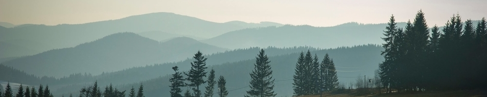
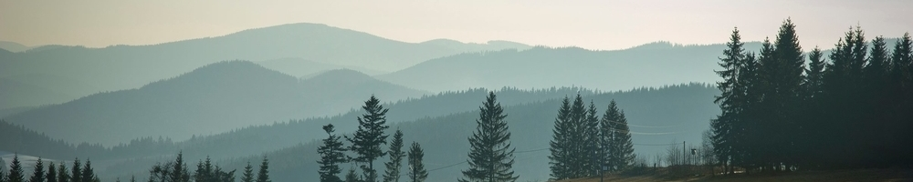

svarna@alvit.cz
svarna@alvit.cz

 

O nás
Švarnou Hanku rozvíjí a provozuje parta nadšenců, i proto je naplněna pohodovou rodinnou atmosférou. Nabízíme ubytovací zázemí až pro skupinu 50 hostů domácí kuchyni, občerstvení a nocleh pro všechny kolemjdoucí, ať už jste aktivní turisté, rodiče s dětmi a pejskem, nebo jen ztracená duše hledající úkryt.
Švarná Hanka se nachází v nádherném prostředí klimaticky ozdravných Moravskoslezských Beskyd v chráněné krajinné oblasti na turistické trase po nejkrásnější hřebenovce v Beskydech mezi Gruněm a Bílým Křížem. Zde nás najdete na mapě (odkaz na mapu) a zde prozkoumejte turistické možnosti v okolí. Jedete autobusem? Vystupte na zastávce Staré Hamry – most nebo Staré Hamry - Stýskalonka.
V červenci a srpnu máme otevřeno celý týden, zbytek roku od čtvrtka do neděle.
Wi-Fi, parkování, voda pro pejsky, úsměv a dobré rady ZDARMA.
Nabídka
Lůžkovou kapacitu 45 lůžek je možno rozšířit pomocí přistýlek. Pro školy (lyžařský výcvik, škola v přírodě, výlet), svatby, rodinné oslavy a větší skupiny hostů nabízíme individuální smluvní ceny i podmínky pobytu. Stačí využít náš e-mail, telefon nebo kontaktní formulář.
Zajímavosti o Švarné Hance
Švarná Hanka je nejstarší horskou chatou v Beskydech, jejíž zrod sahá až do poloviny 19. století. Do historie se Švarná Hanka zapsala především tím, že v době 1. světové války poskytovala úkryt beskydskému bardovi a básníku Petru Bezruči, jehož židle vás společně s dalším starožitným nábytkem a ohněm z kachlových kamen zavede do starých časů.
Poloha chaty poskytuje ideální podmínky pro noční sledování oblohy, je totiž netemnějším místem v České republice. Švarná Hanka pravidelně organizuje pozorování noční oblohy s odborným výkladem našeho hvězdáře, aktuální informace o dění a akcích sledujte v našich aktualitách (odkaz na aktuality), nebo na našem Facebooku.